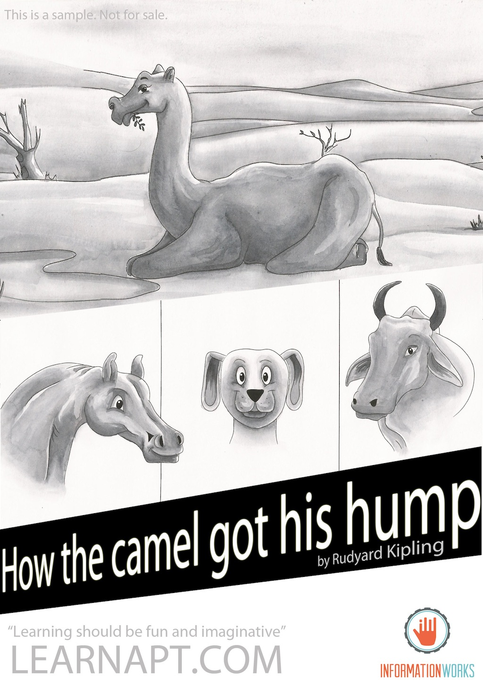

All living things must work, and laziness is not a good thing.
Camel, Horse, Dog, Ox, Djinn, Man
The world had just begun, and the animals worked for humans. There was one lazy animal, the Camel, that did no work, and said nothing but ‘Humph’, and even the clever Djinn was at his wit’s end with this.
1. What tasks, do you think, were assigned to the dog and the ox?
Ans: The dog was assigned the tasks of fetching and carrying, and the ox was tasked with ploughing.
2. Why did the camel live in the middle of the desert?
Ans: He lived in the middle of the desert because he was lazy and did not like to work.
3. What made the dog, the horse, and the ox very angry?
Ans: They were very angry because they had to work double-time to make up for the camel’s share of work.
4. How did the Djinn know the horse was complaining against the camel?
Ans: The djinn knew that the horse was complaining against the camel when the horse said that there is a thing in the middle of the desert with long neck and long legs.
5. The camel was looking at his own reflection in the pool. What does it suggest to you about the camel?
Ans: This suggests that the camel was lazy and so proud of his back that he kept looking at and admiring it.
6. The camel said, “Humph” repeatedly. How did it affect him?
Ans: As the Camel said, “Humph: repeatedly, it affected on him by having a hump on his own back to carry on. He said it so many times that he ended with a hump himself.
7. What, according to the Djinn, was the use of the “humph”?
Ans: The use of the hump was that the camel could survive without food and water for three days as the humph of the Camel would store it all in the Camel’s body.
8. “...he has never yet learnt to behave”. In the light of this, what is the writer’s opinion about the camel?
Ans: In the light of, “... he has never yet learnt to behave.” the writer’s opinion about the camel is that he never
We would love to hear about your experience using this book. We look forward to hear from you.
Email - hello@informationworks.in
Facebook - InformationWorks on Fb; Learnapt.com on Fb
Website - www.learnapt.com